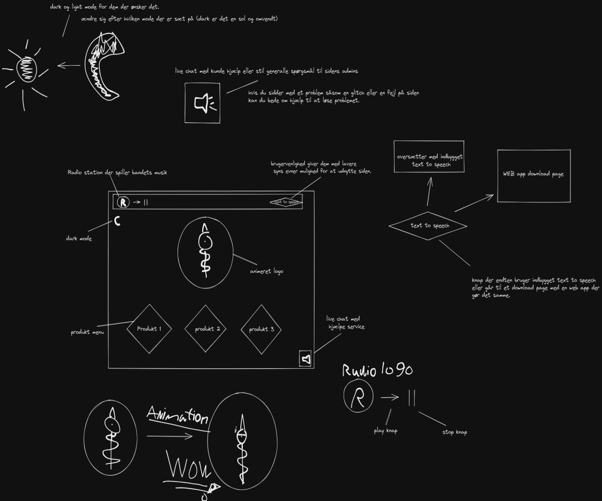
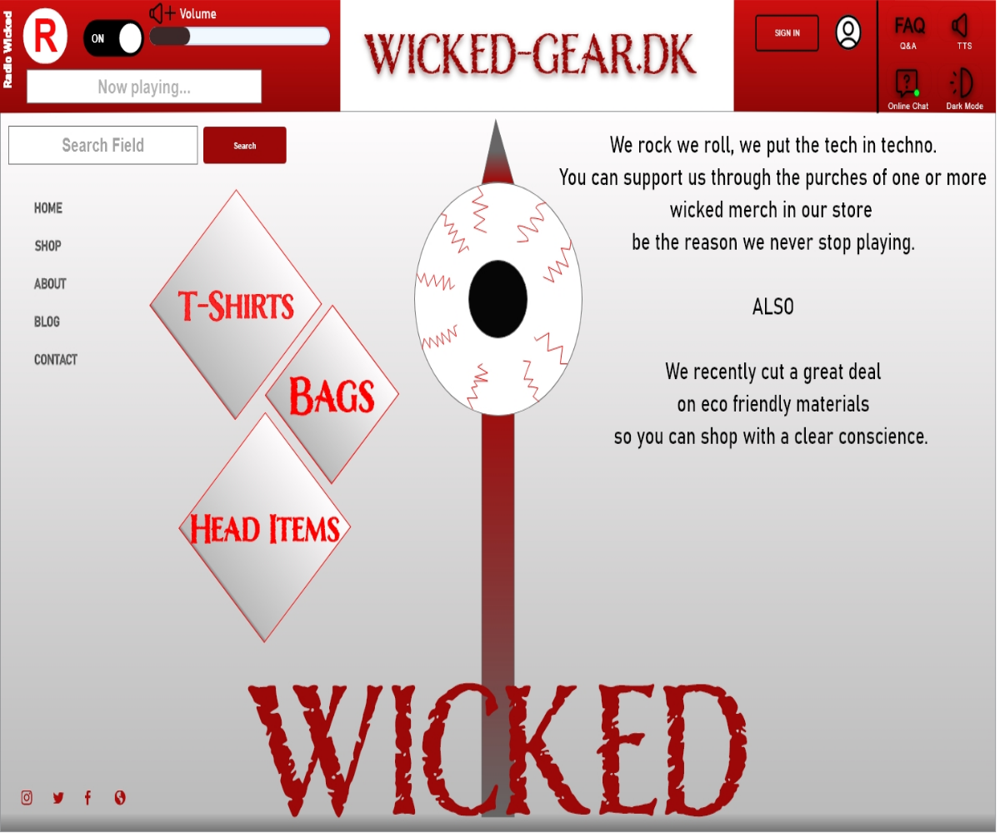
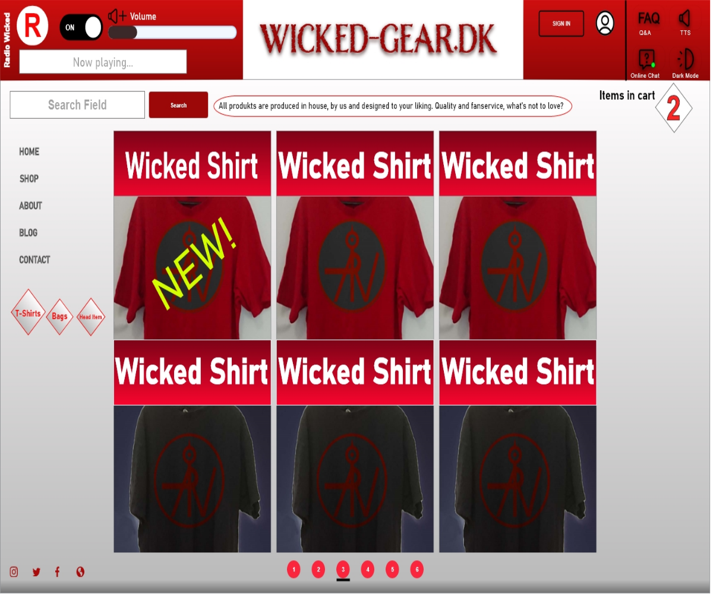
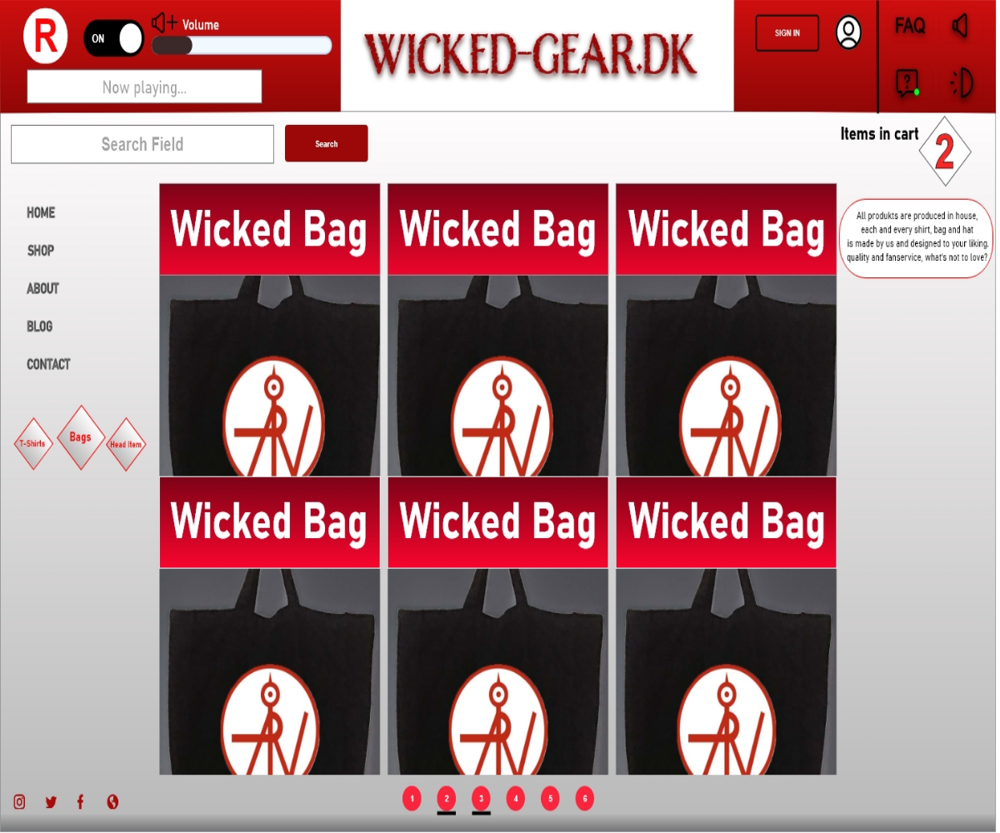
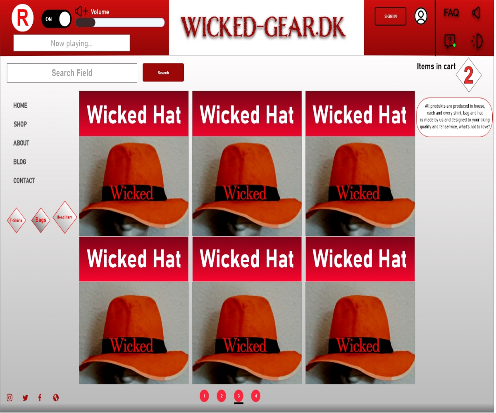
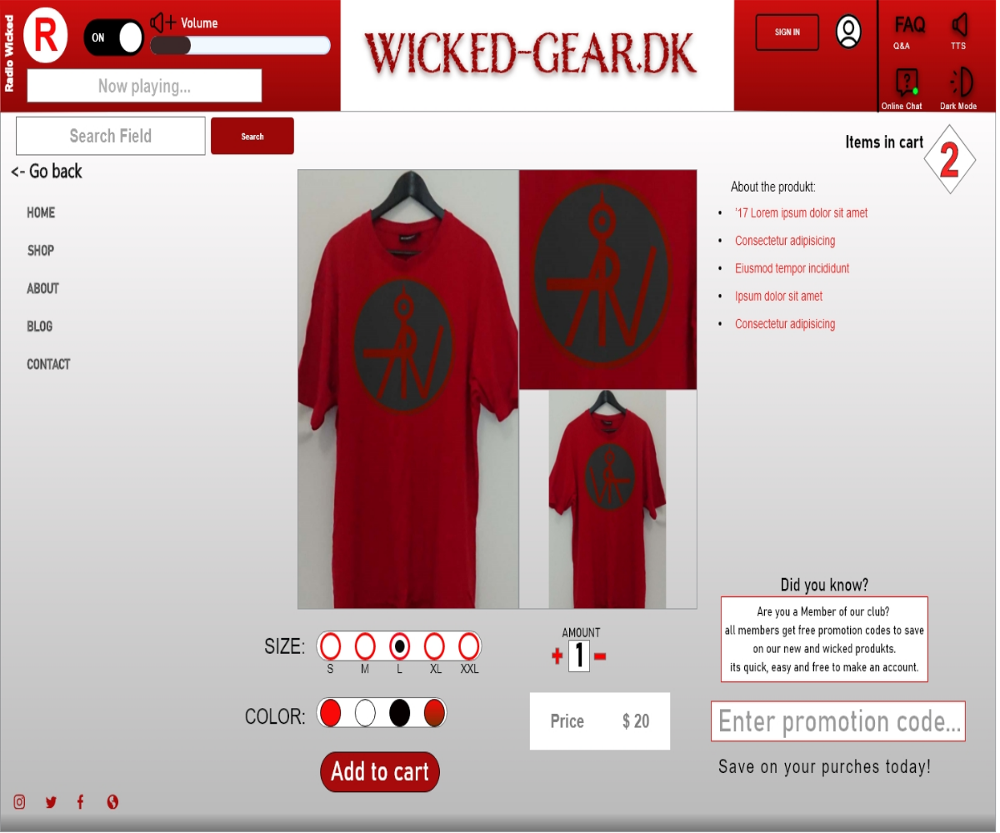
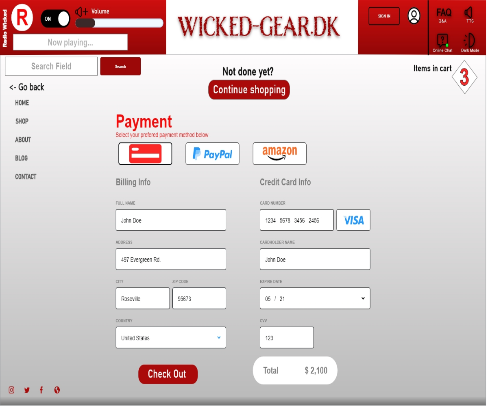

I denne opgave blev vi introduceret til testmetoderne: google spørgeskema, desk research og interviews, Jeg udførte testende på følgende måde først skabte jeg mig et overblik over hvad mit koncept skulle være, derefter gik jeg i gang med desk research hvor jeg blandt andet undersøgte om der var et marked for mit koncept, om der var konkurrenter og i så fald, hvad de havde gjort, her i blandt hvad der gjorde dem unikke. Jeg brugte også tid på at undersøge om hvorvidt mit ejet koncept var realistiske, det gjorde jeg ved at undersøge indtægten for musikere, og så læste jeg en del artikler om hvordan musikere tjener deres penge. Da jeg havde mit koncept undersøgt gik jeg i gang med at lave nogle spørgsmål til et interview og et spørgeskema som jeg delte på nettet. Jeg kom frem til følgende resultat: der er et eksisterende marked, men det er ikke ret stort, det er faktiske næsten et nichemarked som er bedre dækket af støre mere omfattende koncepter, det er også de færreste der hyppigt køber fan merchandise. Det gav anledning til følgende ændringer: Jeg satte extra fokus på bruger venlighed, og features der ville passe til nichen, en radio der spiller bandets sange, som man kan slå til og fra, rabat koder til medlemmer der som kunne deles med venner og andre små quality of life ændringer.








